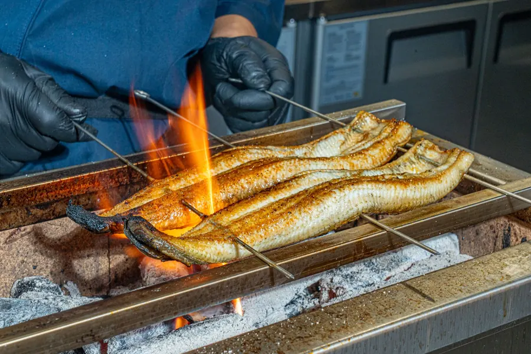
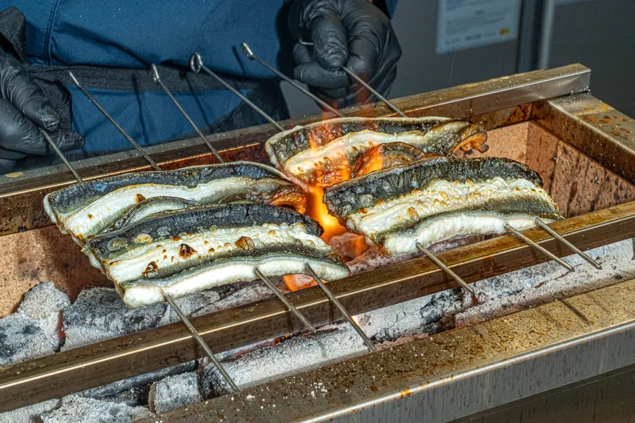

장어는 어떤 불에,
어떻게 굽느냐에
달려 있습니다
좋은 장어를 쓰는 것도 중요하지만, 타와는 굽는 화로부터 신경 썼습니다. 일본에서 장인이 직접 만든 숯화로를 수소문해 들여왔고, 주문이 들어오면 숯불에 바로 구워 냅니다.
겉은 노릇하게 고소하고,
속은 촉촉하게.
장어 특유의 풍미와 은은한 불향을 함께 느끼실 수 있습니다. 좋은 재료 아끼지 않고, 숯과 화로, 굽는 과정까지 하나하나 신경 써서 준비하겠습니다.
